3000km实测，一个人跑步的真相：在享受自由的同时，也要面对提高的不易
一、引子
一个人跑步是挺常见的，从早到晚都能在路上看到独行的跑者。
今年印象最深刻的一次是在暑期的某一天，当天从长海医院出来的时候已经接近正午，当天是高温橙色预警，过了几个路口之后，发现右边的非机动车道上有一个跑者赤膊上身，在烈日下以不低的配速坚定的跑着。
虽然没看到正脸，但能从背部清晰的肌肉线条判断这是一位资深跑者，体脂率很低，跑姿很标准。
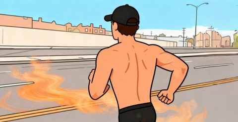
跑步两年半以来，已经完成 3200km，其中至少有 3000km 是一个人跑的，独自跑步的时候能充分的享受这份自由，同时也要面对想提高的不易。
二、一个人跑步的理由
老实说，之前从未想过这个问题，直到和身边的朋友及老婆小孩一起跑步的时候，深刻感受到与其他人一起跑和自己独自跑的区别。
刚开始规律锻炼的时候，我是以骑行为主，后面慢慢就变成了跑步为主，直到现在骑车主要是去学校接孩子和去健身房上课。
从骑行转到跑步：一个中年人两年有氧运动的变化
一个人跑步成了我最主要的运动方式，目前能想到理由有下面几个：
1️⃣ 跑步的热量消耗
如果以 30 分钟为单位，从 Apple Watch 中记录的数据中不难看出，跑步所消耗的热量最高。
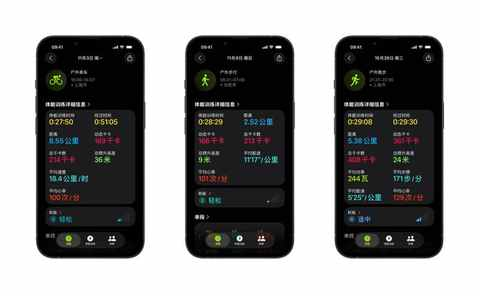
热量消耗与配速及心率息息相关，但跑步是一个能让我的心率快速到二区并能保持住的一项运动。
2️⃣ 郊区宽阔的非机动车道
如果不是因为住的附近都有单独的非机动车道，而且车道都很宽的话，我估计也不会这么快的入坑跑步。
常跑的路线，距离小区大概 1km，路边便是农田，日常电动车和自行车都很少。
这边的非机动车道有多宽呢，简单点说是经常能在非机动车道遇到环卫的作业车，停好之后电动车依然能自如通行。
3️⃣ 在天地间的独处时刻
跑步的时候，总能在某一段路上，某个时间段里，只有你一个人。
可能是 100 米、300 米、1000 米， 在这几分钟时间里，你是在天地间独处。
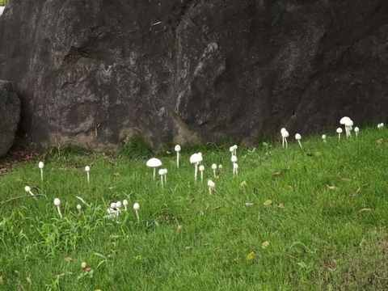
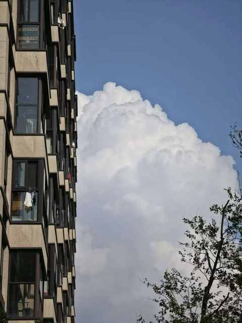
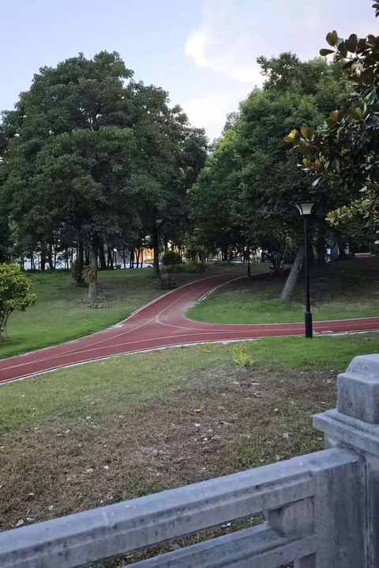
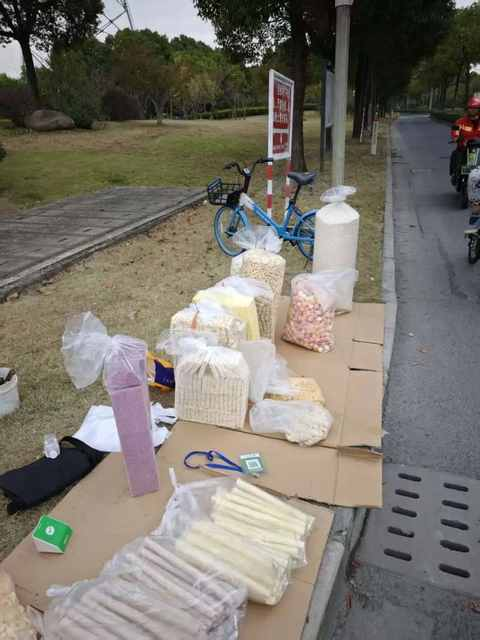
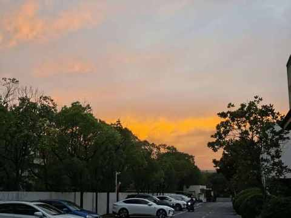
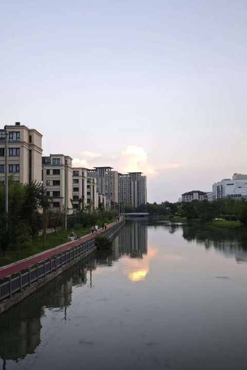
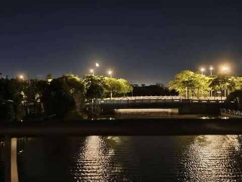
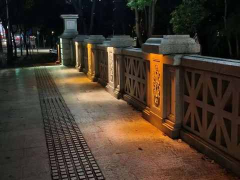
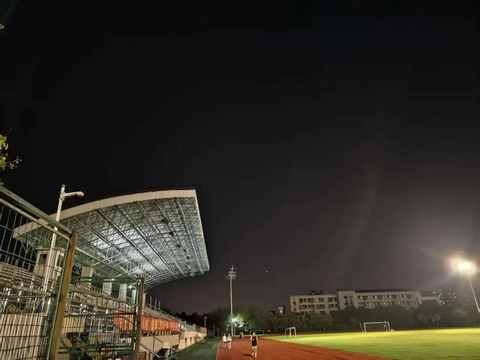
在年龄渐长之后，愈加觉得独处时刻的珍贵，而跑步则能让独处的时候更具象化，许多在日常并未注意到的的景色，感受到的场景，反而会在跑步的过程中被观察到感受到。
三、提高并不容易
毫无疑问，跑步这项运动和在健身房运动一样，有新手福利期。
在新手福利期能越跑越快，越跑感觉越好，同时也会越跑越多，甚至几天不跑感觉少了点什么。
在短暂的新手福利期后，一个个瓶颈则接踵而至，纷至沓来。特别是你开始报比赛，希望成绩能好一点的时候。
1️⃣ 跑量爬升慢
刚开始对跑量的认识过于有限，只是机械的跟着感觉跑。
很长一段时间里面我都在跑 5km，后面依然是 5km 为主偶尔跑8km，在跑了小半年之后才尝试跑了第一个 10km。
在跑 10km的频次增加之后，才把月跑量从 30km-50km，提高到 100km 以上。
2️⃣ 锻炼效率低
一个人跑的时候，想维持一个比慢跑的配速快 40 秒左右配速对我来说都不是一件容易的事情，我需要很努力的迈开腿才行。
除非是前面有人，不想跟在后面跑，便加速超过去能把配速提上来跑 1-2km，然后又回到偏慢的速度。
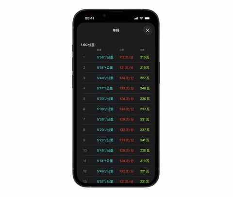
和在比赛中完全不一样，日常跑步的步频基本在 175以下，比赛的时候则大部分时候都维持在 180 的步频，步幅同步也有提升。
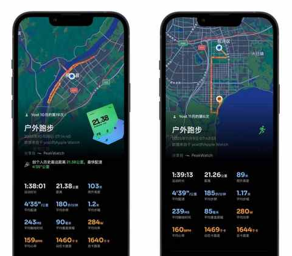
整体来说，一个人跑步的时候，锻炼的效率是偏低的，如此以往必然会带来跑步水平提高的变慢。
鉴于这个情况，我便不再找课表去做对照，因为完全无法按课表来有质量的完成每次跑步训练。
所以现在的策略是，最小化执行难度：
采取跑五休二的节奏，提高跑量打好有氧基础 先。
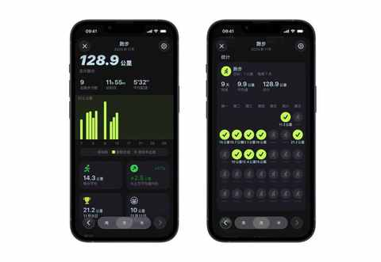
因为 12 月中旬要跑人生中第一个全马，11 月的跑量目标是 280km，争取能跑300km，从而增加在 4 小时内完赛的可能性。
四、结语
所以，一个人跑步，是一个选择，但终究是一场与自我的对话，是一段不断对自己加深了解的过程。
它给予我 珍贵的 独处时光，也让我直面提高的艰难。这条看似孤独的跑道，其实是一条通往内心宁静与坚韧的捷径。
近期文章
早早开始的双11，就这么波澜不惊的过去了
去外地跑一次马拉松，需要花多少钱？这份真实账单给你参考
一个长居省外中年人的合肥印象：记2025的年第4次合肥行
在骆岗公园与2.5万人一起起跑！我的合肥“首马”小事记
中年减肥成功2年后，才发现运动形式真不重要，守住这3点才能不反弹！
我的两个配图利器：两个APP强强联合，实现1+1 > 2的视觉升级
中年初跑者增加跑量两个月后，对如何选跑鞋有了 3个新思考
别慌！和所有Intel版Mac用户共享：3个让我们继续用的理由和2个续命秘籍
老车主看了极氪7X的焕新版之后：情绪稳定！
中年减肥成功2年后，才发现这5个坑当初要是有人点醒我该多好！
中年减肥成功2年后，才发现维持体重靠的不是毅力，而是这5个微习惯